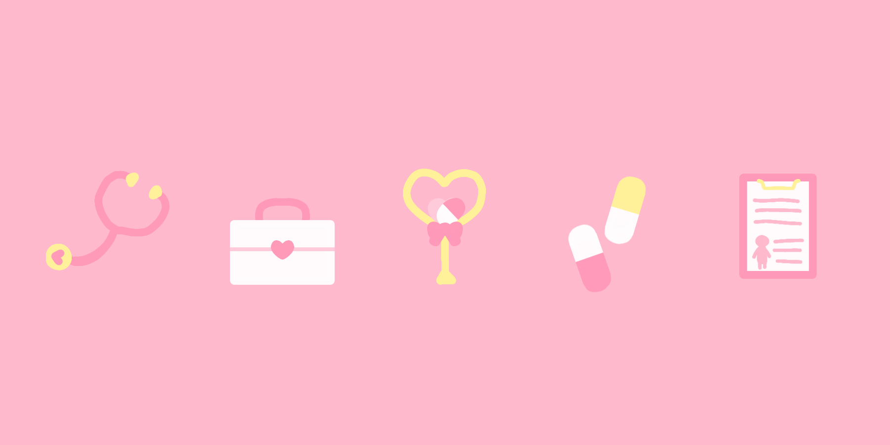

2026年3月1日
About Me
ブログ開設！
こんにちは ishikawa です。赤羽在住の大学生で普段は情報系の勉強をしています。完璧主義で、文章を書くときに見栄えを気にすると全く書き進めることが出来ないので、とりあえず書いてみるというマインドで書き進めていきます。本が好きで特にSFと恋愛（愛について）を読むのですが、単純に面白いから読むという側面と、自分の中にある言語化できなかった感情を言語化してくれる作家さんに遇うという側面があります。恋愛は後者の色が強く、特に大学生になってから出会いの場（図書館）に行くことが多くなりました。一目惚れはしないタイプですが、、、個人的に素敵だなと思った方を紹介しておきます。いいね数が多いほどスワイプ数が多くなるのは本もマチアプも同じなのかもしれませんね。

最果タヒ 第1回 愛は全部キモい ──『ロミオとジュリエット』
技術、音楽、本、映像などについて自分の好きなモノを適当に書いていこうと思うので、雑多なブログになると思いますが付き合って頂けると幸いです。